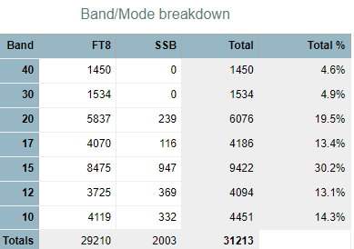

[
Date Prev
][
Date Next
][
Thread Prev
][
Thread Next
][
Date Index
][
Thread Index
]
[NCDXC Chat] FT4GL band breakdown
To
: Chat Ncdxc <
chat@ncdxc.org
>
Subject
: [NCDXC Chat] FT4GL band breakdown
From
: Al N6TA <
al.n6ta@gmail.com
>
Date
: Sun, 2 Jun 2024 16:37:30 -0700
Dkim-signature
: v=1; a=rsa-sha256; c=relaxed/relaxed; d=gmail.com; s=20230601; t=1717371461; x=1717976261; darn=ncdxc.org; h=to:subject:message-id:date:from:mime-version:from:to:cc:subject :date:message-id:reply-to; bh=ETZhPGYqVhM/1k6gAMMx6lExw7m5nGil7Ql4QGYKOZI=; b=EkD7dZezgSBysOWwN1rdcPAMDJ+0zkQYN4iKxnZ2dJHfWCWN06NcPntWq/+YAiNqFw 81mbjhx6tFftkFeyuMAZLUioc79utaKq8iXGik+kVNYl2nj1R/wKmBCzPlfxx5gN2+It V5Jpk5wZB0wQzarBdXS+QEbEgLlEyyTpuE737f1FJke5ElsgkHpcQI1LQuzQYWn5hFTx fv9HrLo4UhzCphihrlN6GyqMABe8EdvkepDvNz8K9791Qd5Qg2qo7JDr5lu8eBwXTOSS axew9nbB7e7ZKhrPp8RmQjrbNGYVv10B0keBdnrAm6mU0wS17UFgoItJ4B0ZIpwYC6C8 C9VA==
List-archive
: <
http://mail.ncdxc.org/mailman/private/chat_ncdxc.org/
>
List-help
: <
mailto:chat-request@ncdxc.org?subject=help
>
List-id
: NCDXC Discussion List <chat.ncdxc.org>
List-post
: <
mailto:chat@ncdxc.org
>
List-subscribe
: <
http://mail.ncdxc.org/mailman/listinfo/chat_ncdxc.org
>, <
mailto:chat-request@ncdxc.org?subject=subscribe
>
List-unsubscribe
: <
http://mail.ncdxc.org/mailman/options/chat_ncdxc.org
>, <
mailto:chat-request@ncdxc.org?subject=unsubscribe
>
Sour grapes for me since I have no QSO on 17 M but he is on 15M now and has twice as many QSOs on 15 as 17 M. Why is he on 15 M, not 17 M and are the pilots recommending this band?
Al N6TA

Follow-Ups
:
Re: [NCDXC Chat] FT4GL band breakdown
From:
"Chortek, Robert L." <Robert.Chortek@berliner.com>
Prev by Date:
Re: [NCDXC Chat] FT4GL 18.130 SSB
Next by Date:
Re: [NCDXC Chat] FT4GL band breakdown
Previous by thread:
Re: [NCDXC Chat] DX SPOT: FT4GL on 21091.0 in FT8 at 06/02/2024 2249Z (FR-G: Glorioso Island)
Next by thread:
Re: [NCDXC Chat] FT4GL band breakdown
Index(es):
Date
Thread